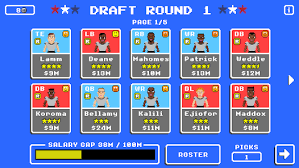

Retro Bowl
This is one of the best sport games you can get on your phone. This game allows you to do many things with your team that makes the game really fun
How to Play
Drafting Your Players
Once you join a team you will start a new season after you play one game. At the beginning of each season you start out with the draft. Depending on what players have retired you can pick out what postitions you need to draft. I recomend making sure you have good wide recievers, running back and Quarter Back. You only have so much money to spend on these players, but the better the players the more you have to pay. Draft wisely so you have good players, but enough money to get more.
Playing The Games
When playing Retro Bowl, you are in control of the quarter back at the start of each play. You have the decision to give it to the running back, try a passing play, or run with the quarter back by throwing the ball backwards. Throwing might be hard the first few games, but it gets easier with more time. Also the more you play the more you can upgrade your players to be a better team.